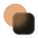

blurssism웹과 앱 어디에나 쓰는 디자인 시스템이에요. 따뜻한 종이 바탕 위에 맑은 유리와 두꺼운 블러를 필요한 곳에만 띄워, 글래스모피즘을 가독성 있게 씁니다. Apple Liquid Glass와 Samsung One UI에서 영감을 받았습니다.
npm install @caffeinecatkr/blurssism
<link rel="stylesheet" href="https://cdn.jsdelivr.net/npm/@caffeinecatkr/blurssism/dist/tokens.css">
<link rel="stylesheet" href="https://cdn.jsdelivr.net/npm/@caffeinecatkr/blurssism/dist/bundle.css">
<button class="bl-btn bl-btn-primary">저장하기</button>